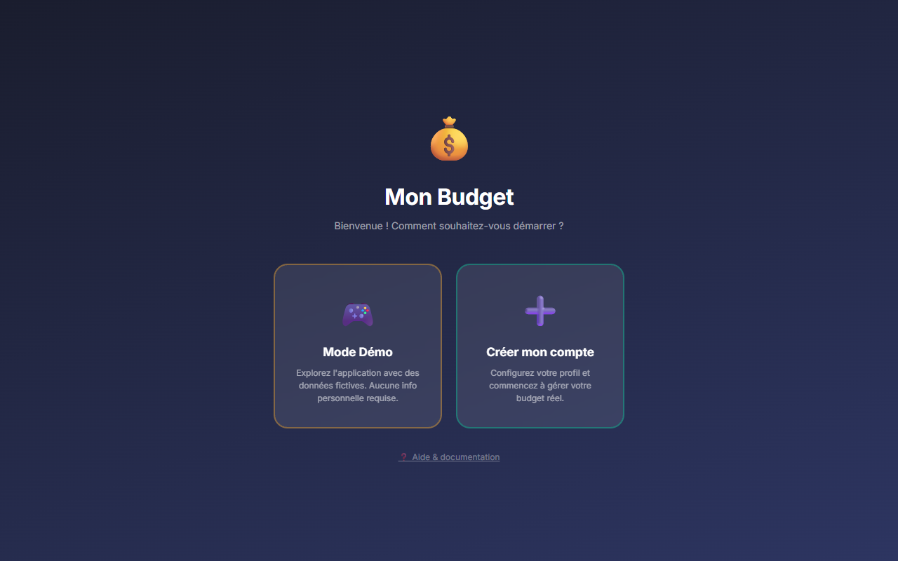
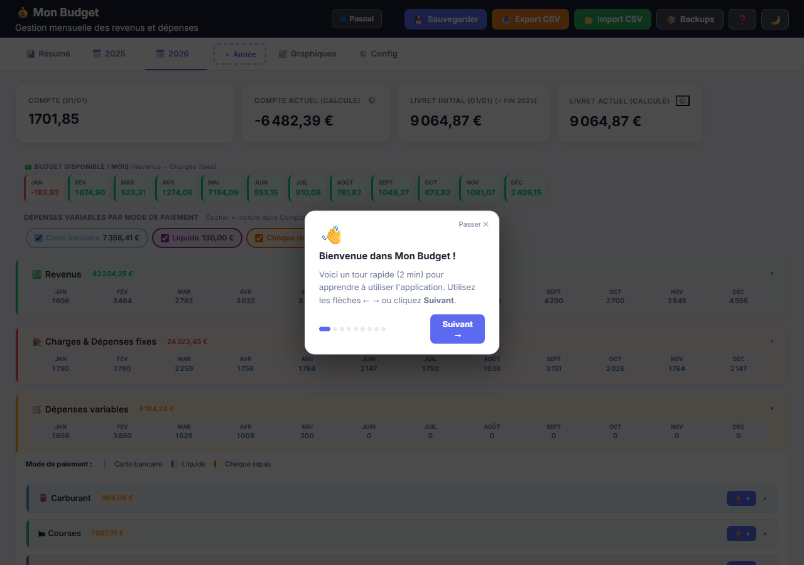
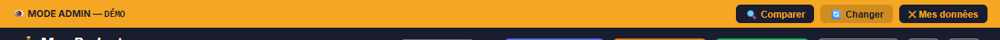
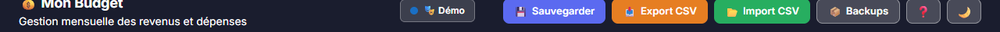
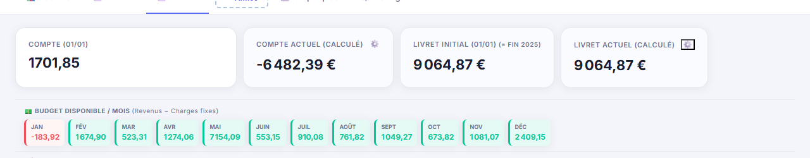
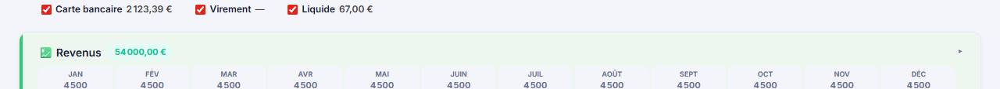
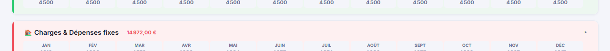
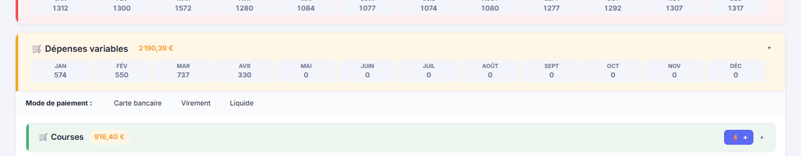
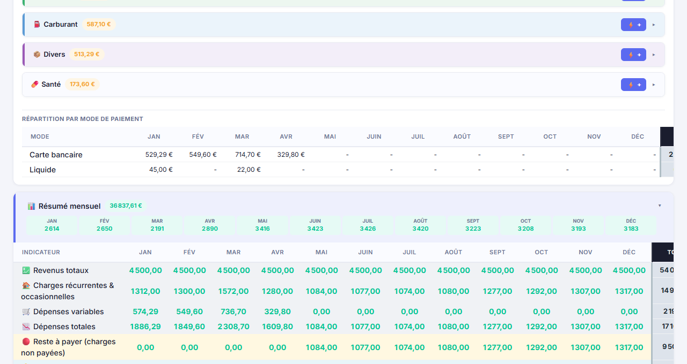

📋 Guide d'installation pas à pas
Suivez ces étapes dans l'ordre. Chaque étape est illustrée d'une capture d'écran réelle. Même un enfant peut le faire ! 😊
Ouvre l'application dans ton navigateur
Va sur l'adresse de l'application (ou ouvre le fichier budget_familial.html). L'écran de démarrage apparaît avec deux choix.

Clique sur ton nom pour te connecter
Clique sur la carte avec ton prénom. Si tu as mis un code PIN, il te sera demandé. Une fois connecté, l'application s'ouvre directement.

Découvre les boutons du haut (header)
En haut de la page se trouvent tous les boutons importants :

- 🔵 Ton prénom — clique pour changer d'utilisateur
- 💾 Sauvegarder — TRÈS IMPORTANT : clique ici après chaque modification !
- 📥 Export CSV — exporte tes données dans un fichier Excel
- 📦 Backups — retrouve tes sauvegardes automatiques
- ❓ Aide — relance le tour guidé ou ouvre ce guide
- 🌙 Mode nuit — change le thème clair/sombre
Navigue entre les années avec les onglets
En dessous du header, tu vois les onglets d'années. Clique sur une année pour l'afficher. Utilise ＋ Année pour créer une nouvelle année.

Renseigne les soldes de départ
En haut de chaque année, il y a 4 cases importantes que tu dois remplir une seule fois :

- Compte (01/01) — Ton solde de compte courant au 1er janvier
- Compte actuel — Se calcule tout seul ✨
- Livret initial — Ton solde de livret d'épargne au 1er janvier
- Livret actuel — Se calcule tout seul ✨
Saisis tes revenus mensuels
Dans la section verte 💼 Revenus, clique sur chaque case pour saisir le montant de chaque mois. Tu peux avoir plusieurs lignes de revenus (salaire, allocations, etc.).

Renseigne tes charges fixes et coche quand c'est payé
Dans la section rose 🏠 Charges & Dépenses fixes, saisis tes charges régulières (loyer, électricité, abonnements…). Chaque mois, clique sur la case pour la cocher en vert quand tu as payé.

Note tes dépenses variables au fil du mois
Dans la section jaune 🛒 Dépenses variables, clique sur le petit ＋ dans la colonne du bon mois pour ajouter une dépense (courses, carburant, divers…).

Consulte le résumé mensuel automatique
La section bleue 📊 Résumé mensuel calcule tout automatiquement pour chaque mois de l'année.

- 🟢 Revenus — total des salaires du mois
- 🔴 Charges payées — total des charges cochées
- 🟡 Dépenses variables — total des dépenses saisies
- 🔵 Solde réel — ton solde bancaire réel calculé
- 💰 Livret — ton solde d'épargne calculé
Sauvegarde et c'est terminé ! 🎉
Clique sur le bouton 💾 Sauvegarder dans le header. L'application affiche "Sauvegardé ✅" et la date/heure du dernier enregistrement.
🚀 Démarrage
Mon Budget est une application web progressive (PWA). Elle fonctionne hors ligne et peut être installée sur votre appareil comme une vraie application.
Première ouverture
Lors de la première ouverture, vous avez le choix entre :
Création de compte (assistant en 6 étapes)
- Profil — Votre prénom et couleur d'avatar
- Revenus — Vos revenus mensuels habituels (salaires, allocations…)
- Charges — Vos charges fixes récurrentes (loyer, énergie, abonnements…)
- Budgets — Budget mensuel suggéré pour chaque catégorie de dépenses (converti automatiquement en annuel)
- PIN — Code de sécurité facultatif pour protéger vos données
- Cloud — Connexion Google optionnelle pour la sync Premium
Installation sur mobile / bureau
Sur mobile (Chrome/Safari), appuyez sur « Ajouter à l'écran d'accueil ». Sur PC (Chrome/Edge), cliquez sur l'icône d'installation dans la barre d'adresse. L'app fonctionne ensuite hors ligne.
🎮 Mode Démo
Le mode démo charge des données fictives pour vous permettre d'explorer toutes les fonctionnalités sans risque.
Activer le mode démo
Au premier lancement, cliquez sur la carte Mode Démo. L'application se charge avec des données d'exemple (Jean & Marie, 2025–2026).
Quitter le mode démo
Cliquez sur ✕ Quitter le mode démo dans la bannière. Confirmez la suppression : toutes les données fictives sont effacées et vous revenez à l'écran de démarrage pour créer votre vrai compte.
🖥️ Interface générale
L'application est organisée par années (onglets) et par mois (colonnes dans chaque tableau).
En-tête (header)
- 💾 Sauvegarder — Enregistre toutes les modifications dans le navigateur
- 📥 Export CSV — Exporte les données du mois actuel en CSV
- 🖨️ PDF — Génère un rapport PDF structuré : KPIs annuels, tableau mensuel complet et répartition des dépenses par catégorie pour chaque année
- 📂 Import CSV — Importe des transactions depuis un relevé bancaire CSV (détection automatique des colonnes, choix de catégorie, méthode de paiement, total sélectionné et détection automatique des doublons ⚠️)
- 📦 Backups — Affiche la liste des sauvegardes automatiques (une par jour, 20 max)
- 🔐 Connexion — Connexion avec Google pour la synchronisation cloud Premium
- ❓ Aide — Relance le tour guidé ou ouvre ce guide
- 🌙 / ☀️ — Bascule entre mode jour et mode nuit
Boutons flottants (bas à droite)
- ➕ Vert — Ajout rapide d'une dépense variable
- 🤖 Violet — Assistant IA Groq (chat)
Onglets d'années
Chaque onglet représente une année. Cliquez sur ＋ Année pour créer une nouvelle année.1 an max en gratuit Illimité en Premium
Colonnes de mois
Chaque tableau a 12 colonnes (Jan–Déc). Saisissez directement les montants dans les cellules. Appuyez sur Entrée ou Tab pour passer à la cellule suivante.
🏠 Tableau de bord mensuel
L'onglet Accueil est votre vue synthèse du mois : d'un coup d'œil, vous voyez où vous en êtes financièrement sans avoir à parcourir les tableaux détaillés.
Navigation entre les mois
Utilisez les boutons ← et → pour naviguer d'un mois à l'autre. Le changement d'année s'effectue automatiquement (janvier → décembre de l'année précédente et inversement). Utilisez le sélecteur d'année pour sauter directement à une année.
📅 Vue mensuelle / 📊 Vue annuelle
Un toggle en haut à droite permet de basculer entre la vue mensuelle (détail d'un mois) et la vue annuelle qui affiche les totaux de l'année, le taux d'épargne, l'épargne moyenne mensuelle, le meilleur et pire mois, et un graphique en barres des soldes mois par mois.
4 indicateurs clés (KPIs)
Chaque carte affiche la valeur du mois sélectionné et une sparkline SVG — une mini-courbe représentant la tendance sur les 12 mois de l'année. D'un coup d'œil, vous voyez si un indicateur monte ou descend.
🍩 Graphique donut
Lorsqu'il y a au moins 2 catégories de dépenses variables actives dans le mois, un graphique donut SVG apparaît sous les KPIs. Il montre la répartition des dépenses par catégorie avec le montant et le pourcentage.
🔄 Comparaison vs année précédente
Si vous avez des données pour l'année précédente, un tableau comparatif s'affiche automatiquement pour le même mois. Il indique pour chaque indicateur le delta (+ ou −) avec une couleur verte (amélioration) ou rouge (régression).
⚠️ Alertes budgets dépassés
Si une catégorie de dépenses variables dépasse son budget mensuel (défini dans la gestion des catégories), une alerte rouge apparaît dans le tableau de bord avec le montant dépensé vs le budget.
🛒 Dernières dépenses
La liste des dépenses variables du mois est affichée, triées par montant décroissant (jusqu'à 8 entrées + compteur des autres).
📅 Bouton "Aller à l'année en cours"
Un bouton rapide permet de naviguer directement vers l'onglet de l'année actuelle (ex: 2026) depuis le tableau de bord.
🏠 Détail des charges du mois
En dessous des KPIs et de la comparaison, une section liste toutes les charges du mois en cours (loyer, abonnements, versements livret…) avec leur montant et leur statut payé ✓.
📱 Navigation par swipe (mobile)
Sur mobile, un glissement vers la gauche passe au mois suivant, un glissement vers la droite revient au mois précédent — sans avoir à toucher les boutons ← →.
📝 Note du mois
En bas de l'Accueil, un champ texte libre permet d'ajouter une note mensuelle (ex : "mois chargé, vacances", "bonus reçu"). La note est sauvegardée automatiquement et apparaît dans le rapport PDF dans une section dédiée.
🔍 Recherche globale
Retrouvez instantanément n'importe quelle ligne de revenu, charge ou dépense variable dans toutes vos années, sans naviguer dans les tableaux.
Ouvrir la recherche
Cliquez sur l'onglet 🔍 dans la barre de navigation (tout à droite). La recherche peut aussi être fermée avec la touche Échap.
Ce qui est indexé
- Libellés des revenus — ex : "Salaire", "Prime"
- Libellés des charges — ex : "Loyer", "Assurance"
- Dépenses variables — libellé, catégorie, commentaire et montant de chaque transaction
Filtres
Des filtres s'affichent sous la barre de recherche pour affiner les résultats :
- Année — limitez la recherche à une année spécifique
- Mois — filtrez sur un mois précis
- Type — Tous / Revenus / Charges / Variables
Un bouton Réinitialiser apparaît dès qu'un filtre est actif.
Résultats
Les résultats sont groupés par année avec le type et le montant. Cliquer sur un résultat ouvre directement la transaction dans sa catégorie et son mois (le détail se déroule automatiquement) et ferme la recherche.
🎯 Objectif d'épargne mensuel
Définissez un objectif d'épargne mensuel en euros. Une barre de progression s'affiche dans l'onglet Accueil pour suivre votre avancement.
Configurer l'objectif
- Ouvrez l'onglet ⚙️ Config
- Descendez jusqu'à la section 🎯 Objectif d'épargne mensuel
- Saisissez le montant cible (ex : 500 €/mois)
- Cliquez sur ✅ pour enregistrer
Barre de progression
Dans l'onglet 🏠 Accueil, la barre indique le pourcentage d'objectif atteint pour le mois affiché :
- Vert — Objectif atteint ou dépassé 🎉
- Bleu — En bonne voie (solde positif mais sous l'objectif)
- Rouge — Solde négatif, objectif non atteignable ce mois
💼 Revenus
Saisissez vos revenus mensuels (salaires, allocations, primes…) dans la section verte.
Ajouter un revenu
Cliquez sur ＋ Ajouter un revenu en bas de la section. Saisissez le libellé et les montants mois par mois.
Cocher « En calcul »
La colonne ∑ (en calcul) détermine si ce revenu est pris en compte dans le résumé mensuel. Décochez pour exclure temporairement un revenu sans le supprimer.
Supprimer une ligne
Passez la souris sur le libellé d'une ligne pour faire apparaître le bouton ✕ rouge. Cliquez dessus pour supprimer (une confirmation est demandée).
🏠 Charges fixes
Les charges sont les dépenses récurrentes : loyer, énergie, abonnements, assurances…
Statut « Payé »
Chaque cellule de charge a un indicateur de paiement. Cliquez sur la cellule pour basculer entre payé (vert) et non payé (gris). Seules les charges marquées payées sont incluses dans le calcul du solde réel.
Types de charges
- Fixe — Montant identique chaque mois
- Occasionnelle — Montant variable selon le mois
- Livret ↑ — Virement vers le livret d'épargne
- Livret ↓ — Retrait du livret vers le compte courant
Reste à payer
En bas de chaque tableau de résumé, une ligne « Reste à payer » affiche le total des charges non encore payées pour le mois.
🛒 Dépenses variables
Les dépenses variables (courses, carburant, divers…) sont saisies sous forme de transactions individuelles.
Catégories disponibles
En version gratuite, vous disposez de 3 catégories (courses, carburant, divers). En version Premium, créez-en autant que vous voulez depuis ⚙️ Paramètres → Catégories.3 max en gratuit Illimité en Premium
🔎 Filtrer les catégories
Un champ de recherche en haut de la section "Dépenses variables" permet de filtrer les catégories par nom en temps réel. Utile quand vous avez beaucoup de catégories (Premium).
Ajouter une dépense
Cliquez sur le bouton ＋ dans la colonne du bon mois. Une ligne s'ajoute avec le montant, un commentaire optionnel, la date et le mode de paiement.
Modes de paiement
- Carte — Paiement par carte bancaire (par défaut)
- Liquide — Paiement en espèces
- Repas — Tickets restaurant / chèques repas
Couleurs des catégories
🎯 Budgets par catégorie
Définissez un budget annuel pour chaque catégorie de dépenses variables et suivez vos progrès en temps réel.
Comment ça fonctionne
Pour chaque catégorie (courses, carburant…), vous pouvez fixer un budget annuel. Une barre de progression s'affiche sous le titre de la catégorie, indiquant combien vous avez dépensé par rapport à l'objectif.
Définir un budget
Trois façons de définir un budget :
- À la création du compte — L'assistant wizard propose des montants suggérés (ex : courses 300 €/mois) à l'étape 4. Modifiez-les, puis confirmez. Les montants €/mois sont automatiquement convertis en €/an.
- En ajoutant une catégorie — Dans ⚙️ Config → Catégories, saisissez un montant €/mois ou €/an lors de l'ajout d'une nouvelle catégorie.
- Via la Config — Dans ⚙️ Config → Catégories, modifiez le champ Budget/an € directement sur la ligne de la catégorie existante.
Alerte budget manquant
Quand vous cliquez sur ⚡ + ou utilisez l'Ajout rapide pour une catégorie sans budget, une alerte orange s'affiche dans le formulaire avec un lien Définir un budget →. Cliquez dessus pour saisir un montant mensuel immédiatement.
Modifier une catégorie
Dans ⚙️ Config → Catégories, vous pouvez désormais modifier directement l'icône et le libellé d'une catégorie existante en cliquant sur les champs correspondants. Inutile de supprimer et recréer.
💰 Livret d'épargne
Le livret d'épargne est géré automatiquement à partir des lignes de charge spéciales.
Lignes dédiées au livret
- 📈 Ordre permanent Livret (cat:
livret_in) — Virement mensuel automatique depuis le compte courant vers le livret. Augmente le solde livret, diminue le compte courant. - 💰 Compte → Livret (cat:
livret_in) — Dépôt manuel. Même effet. - 📉 Retrait Livret → compte (cat:
livret_out) — Retrait du livret vers le compte courant. Diminue le livret, augmente le compte courant.
Solde livret initial
Pour la première année, saisissez le solde du livret au 1er janvier dans le champ Livret initial (01/01).
Pour les années suivantes, ce champ est calculé automatiquement à partir du solde de fin de l'année précédente — vous n'avez rien à saisir.
Saisie des montants
Saisissez toujours des valeurs positives. L'application gère automatiquement le sens (ajout ou retrait) selon le type de ligne.
📊 Résumé mensuel
Le tableau de résumé affiche pour chaque mois le bilan complet : revenus, charges, dépenses et soldes.
Lignes du résumé
- Revenus — Total des revenus marqués « en calcul »
- Charges payées — Total des charges marquées payées
- Dépenses variables — Total des transactions saisies
- 🔴 Reste à payer — Charges non encore payées
- Disponible — Revenus − charges payées − dépenses variables
- SOLDE RÉEL — Solde du compte courant calculé depuis le début de l'année
- Livret — Solde du livret d'épargne à la fin du mois
🏆 Statistiques annuelles
Sous le tableau de résumé, des cartes de statistiques s'affichent pour chaque année : taux d'épargne annuel, épargne moyenne par mois, meilleur et pire mois (par solde), mois le plus dépensier en variables, et la catégorie de dépenses variables la plus coûteuse.
Soldes initiaux
En haut de la page (section Soldes de départ), renseignez :
- Compte ING — Solde du compte courant au 1er janvier
- Livret initial — Solde du livret au 1er janvier (auto-calculé pour les années suivantes)
📈 Indicateurs financiers (KPI)
Quatre indicateurs clés s'affichent automatiquement en haut de chaque année pour évaluer votre santé financière d'un coup d'œil.
Projection fin d'année
Dans le résumé mensuel, une ligne de projection s'affiche si vous avez au moins 1 mois de données et que l'année n'est pas encore terminée. Elle calcule votre épargne annuelle estimée sur la base de votre moyenne mensuelle actuelle.
📉 Graphiques
L'onglet Graphiques offre plusieurs visualisations de vos finances, filtrables par année. Un bouton 📅 Aller à [année en cours] permet de revenir directement à l'onglet de l'année actuelle.
💾 Sauvegarde et backups
Toutes les données sont stockées localement dans votre navigateur (localStorage). Pensez à sauvegarder régulièrement.
Sauvegarde manuelle
Cliquez sur 💾 Sauvegarder dans le header. Une notification verte confirme l'enregistrement. La date/heure de la dernière sauvegarde s'affiche à droite.
Sauvegarde automatique quotidienne
À chaque sauvegarde, une copie datée est créée automatiquement. L'application conserve les 20 derniers backups (un par jour).
Restaurer un backup
Cliquez sur 📦 Backups dans le header. La liste des sauvegardes apparaît avec leur date. Cliquez sur Restaurer pour revenir à un état antérieur.
📥 Sauvegarde externe — Export / Import JSON
Pour éviter tout risque de perte lors d'un vidage de cache, vous pouvez exporter vos données en fichier JSON :
- Allez dans ⚙️ Réglages
- Dans la section 📥 Sauvegarde externe, cliquez sur ⬇️ Exporter JSON
- Un fichier
budget_backup_XXXX.jsonest téléchargé — conservez-le en lieu sûr (cloud, clé USB…) - Pour restaurer, cliquez sur ⬆️ Importer JSON et sélectionnez le fichier
🐙 Sync cloud gratuit via GitHub Gist
La synchronisation GitHub Gist permet de sauvegarder vos données en ligne automatiquement à chaque enregistrement. Si vous videz votre cache ou changez d'appareil, vos données sont récupérables en un clic.
Export CSV
Cliquez sur 📥 Export CSV pour télécharger vos données mensuelles en tableau. Ce fichier peut être réimporté via 📂 Import CSV.
🌙 Mode nuit / jour
Basculez entre le thème clair et le thème sombre à tout moment.
Cliquez sur le bouton 🌙 (mode nuit) ou ☀️ (mode jour) dans le coin supérieur droit du header. Le choix est mémorisé et persistera à la prochaine ouverture.
📅 Créer une nouvelle année
Chaque année est indépendante. Créez une nouvelle année pour commencer le suivi d'un nouvel exercice.1 an max en gratuit Illimité en Premium
Procédure
- Cliquez sur ＋ Année à droite des onglets d'années
- Une fenêtre s'affiche avec vos revenus habituels (basés sur la moyenne de l'année précédente)
- Ajustez les montants si nécessaire
- Cliquez sur ✅ Créer l'année
L'année est créée avec :
- Les revenus que vous avez confirmés
- Les mêmes charges que l'année précédente
- Le solde livret initial calculé automatiquement depuis la fin de l'année précédente
- Aucune dépense variable (à saisir au fil de l'année)
Supprimer une année
Survolez l'onglet de l'année → cliquez sur le ✕ qui apparaît. Une confirmation est demandée avec option de backup automatique.
🔐 Connexion & Compte Cloud
Créez un compte avec votre adresse email pour accéder à la synchronisation cloud et activer le Premium.
Pourquoi se connecter ?
Sans connexion, vos données sont stockées uniquement dans votre navigateur. Avec un compte connecté :
- ✅ Synchronisation automatique dans le cloud Firebase (Premium)
- ✅ Accès depuis plusieurs appareils (PC, téléphone, tablette)
- ✅ Vos données sont récupérables si vous changez de navigateur
- ✅ Activation Premium automatique après paiement Stripe
Comment créer un compte / se connecter
- Allez dans l'onglet ⚙️ Paramètres et cliquez sur 🔐 Se connecter
- Saisissez votre adresse email et un mot de passe
- Si c'est la première fois : cliquez Créer un compte — un email de vérification est envoyé
- Si vous avez déjà un compte : cliquez Se connecter
- Votre email apparaît dans Paramètres — vous êtes connecté ✅
➕ Bouton Ajout Rapide
Le bouton vert ➕ en bas à droite permet d'ajouter une dépense variable rapidement, depuis n'importe quelle vue.
Comment l'utiliser
- Cliquez sur le bouton ➕ vert en bas à droite de l'écran
- Un formulaire apparaît avec les champs : catégorie, montant, mois, commentaire, mode de paiement, jour
- L'année et le mois sont pré-remplis selon l'onglet actif
- Saisissez le montant et cliquez sur ✅ Ajouter
Champs disponibles
- Catégorie — Courses, carburant, divers, ou vos catégories personnalisées Premium
- Montant — La somme de la dépense en euros
- Mois — Le mois auquel rattacher la dépense
- Commentaire — Note optionnelle (ex : "Lidl", "Plein carburant")
- Mode de paiement — Carte, liquide, chèque repas…
- Jour — Le jour du mois (optionnel)
🤖 Assistant IA (Groq)
L'assistant IA répond à vos questions sur vos 10 dernières transactions en langage naturel. Propulsé par Groq — gratuit, sans carte bancaire.
Activer l'assistant (2 minutes)
- Allez sur console.groq.com/keys
- Créez un compte gratuit (email + mot de passe, aucune carte bancaire)
- Cliquez sur Create API Key
- Donnez un nom (ex : "Mon Budget") et copiez la clé générée (commence par
gsk_…) - Dans l'application, allez dans ⚙️ Paramètres → Assistant IA
- Collez la clé dans le champ et cliquez ✅ Sauver
Utiliser le chat
- Cliquez sur le bouton 🤖 violet en bas à droite
- Le panneau de chat s'ouvre
- Tapez votre question en français et appuyez sur Entrée
- L'assistant répond en se basant sur vos vraies données
Exemples de questions
« Dernière transaction encodée ? »
« Mes derniers achats en carburant ? »
« Derniers achats par carte ? »
« Résume mes dernières dépenses »
Historique de conversation
L'historique du chat est sauvegardé automatiquement sur votre appareil (localStorage). Vous retrouvez vos échanges à chaque ouverture du chat. Le bouton 🗑️ Effacer vide l'historique.
Confidentialité
Vos données budget sont envoyées à l'API Groq uniquement au moment où vous posez une question. Groq utilise le modèle Llama 3.1 (open-source). La clé API est stockée uniquement dans votre navigateur, jamais sur nos serveurs.
💬 Feedback & Suggestions
Envoyez vos idées, signalements de bugs ou questions directement depuis l'application. Chaque message est lu et traité personnellement.
Envoyer un message
- Cliquez sur l'icône 💬 en bas à droite de l'application
- Choisissez la catégorie : 🐛 Bug, 💡 Idée, ❓ Question ou 💬 Autre
- Saisissez un sujet et votre message
- Donnez une note ⭐ optionnelle
- Cliquez sur 📤 Envoyer
Suivi de votre demande
Chaque feedback reçoit un statut qui évolue au fil du traitement :
- 🟠 Nouveau — reçu, pas encore lu
- 🔵 Lu — pris en compte
- 🟣 En cours — en cours de traitement
- 🟢 Répondu — une réponse vous a été envoyée par email
- ⚫ Clôturé — traitement terminé